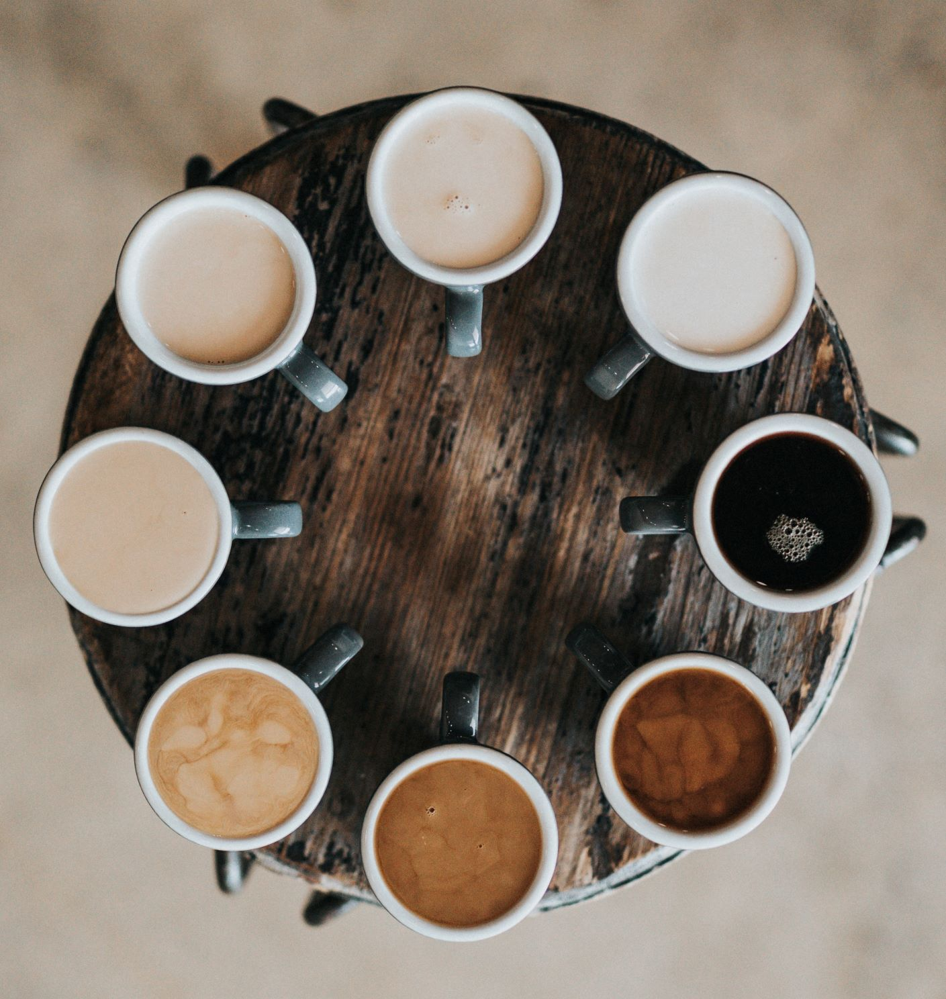

Take a look into the wild world of coffee! There are so many different types of coffee and different ways to make coffee.
"No one can understand the truth until he drinks of coffee’s frothy goodness."
Sheik Abd-al Kabir
Here are a few different ways I like to brew my coffee:
One of my go-to methods of coffee making is using a Chemex to make pour over coffee.
In order to use the Chemex, insert a filter and pour hot water on the filter to elminate any papery taste. Pour the water out and then put your grounds in.
For the best tasting coffee, be sure to pour a small amount of hot water on the grounds to allow them to bloom. Then pour hot water in a circular motion until the filter is filled. Allow the coffee to drip and then repeat the pour one time. Remove the filter and enjoy!
Cold brew is a great option if you are thinking ahead and want a delicious and strong cup of coffee for the next day!
I use a french press to make my cold brew, but any large jug or pot will work. Simply add your grounds (about twice as much as your regular brew) and pour cold water over them. Leave the mixture at room temperature for 14-18 hours, chill and enjoy!
If you are looking for a delicious espresso maker at a low price point, look no further than the Aeropress!
Writing out the instructions to make the perfect espresso with an aeropress would be too compliated. See the AeroPress website for more details.